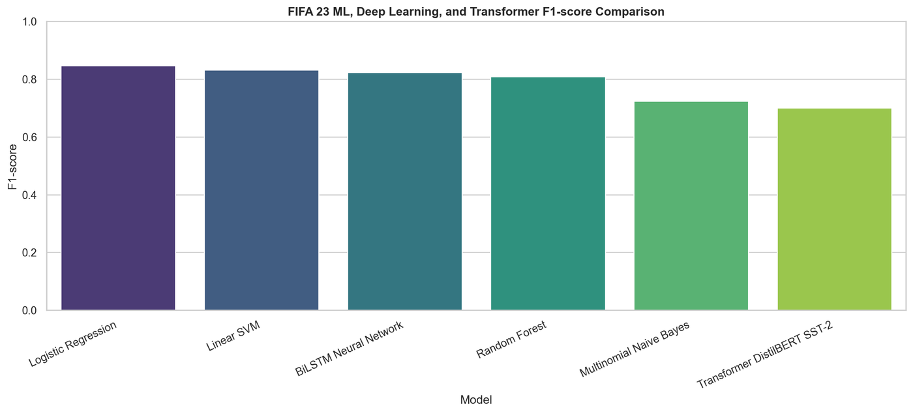
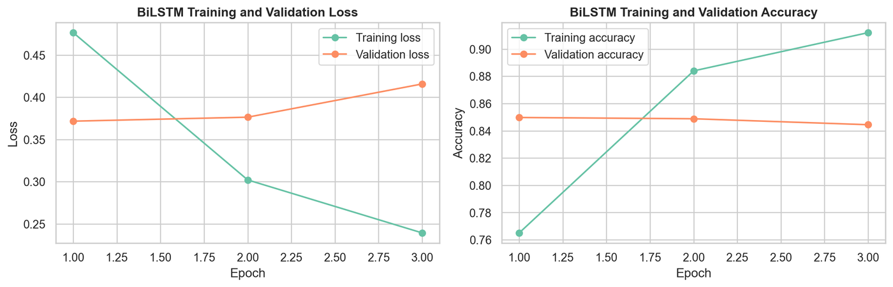
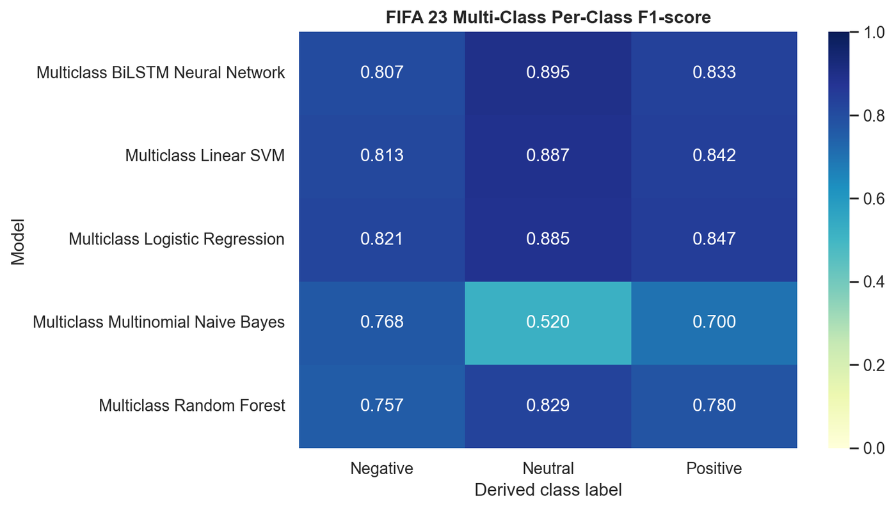
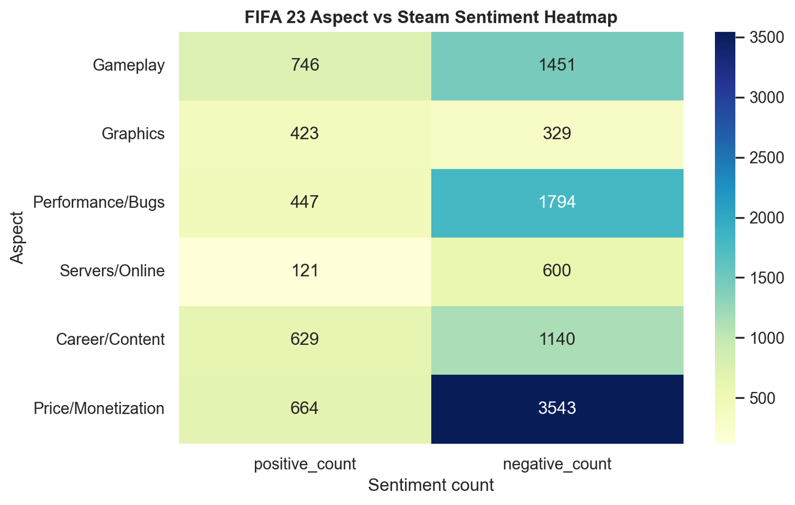
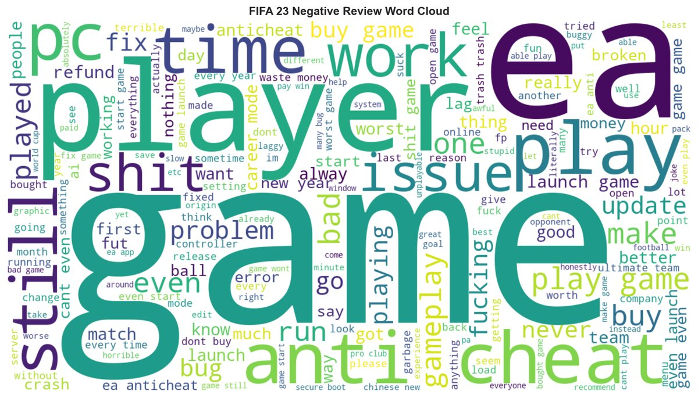

What 20,050 Steam reviews say about FIFA 23
Six models, one test split, and a result that argues against reaching for a transformer by reflex. Then a layer that turns the metrics into something a product team could act on.
| Term | Stands for | What it is |
|---|---|---|
| TF-IDF | Term Frequency – Inverse Document Frequency | A way of turning text into numbers that weights a word by how distinctive it is to one review rather than common across all of them |
| VADER | Valence Aware Dictionary and sEntiment Reasoner | A rule-based sentiment scorer tuned for social media. Its compound score runs from −1 to +1 |
| DistilBERT | — | A smaller, faster distilled version of BERT. The SST-2 checkpoint was fine-tuned on film reviews |
| SST-2 | Stanford Sentiment Treebank v2 | The film-review dataset that checkpoint was trained on — which is why it transfers poorly to game reviews |
| BiLSTM | Bidirectional Long Short-Term Memory | A recurrent neural network that reads a sentence forwards and backwards before deciding |
| F1 | — | The harmonic mean of precision and recall. One number that punishes a model for being lopsided either way |
| Macro-F1 | — | F1 averaged over classes with equal weight, so a rare class counts as much as a common one |
| ABSA | Aspect-Based Sentiment Analysis | Scoring sentiment per topic — price, servers, graphics — instead of one verdict per review |
voted_up | — | Steam's own thumbs-up / thumbs-down flag. The only label in this dataset that is not inferred |
The pipeline
Raw Steam reviews in, four separate analyses out. Cleaning and language filtering reduced 25,737 records to 20,050 usable English reviews — 9,310 positive and 10,740 negative by Steam's own voted_up flag, which is the one label in this dataset that is not inferred.
From there: exploratory analysis, four formal hypothesis tests, a supervised model bake-off, a second weak-label experiment, opinion-word extraction, and dictionary-based aspect sentiment over six facets of the game.
The finding that matters
Six models were trained and evaluated on identical splits. A pretrained DistilBERT SST-2 pipeline came last.
| Model | Accuracy | Precision | Recall | F1 |
|---|---|---|---|---|
| TF-IDF + logistic regression | 0.8566 | 0.8403 | 0.8534 | 0.8468 |
| TF-IDF + linear SVM | 0.8414 | 0.8193 | 0.8448 | 0.8318 |
| BiLSTM (trained from scratch) | 0.8404 | 0.8479 | 0.7997 | 0.8231 |
| Random forest | 0.8155 | 0.7802 | 0.8389 | 0.8085 |
| Multinomial naive Bayes | 0.7793 | 0.8621 | 0.6246 | 0.7244 |
| DistilBERT SST-2 (pretrained) | 0.7565 | 0.8184 | 0.6114 | 0.6999 |

DistilBERT SST-2 was fine-tuned on film reviews and applied here zero-shot. Its recall is 0.6114 — it misses a third of the class it should catch, because gamer register (sarcasm, “EA being EA”, patch-note grievances) is not the distribution it learned. Meanwhile TF-IDF fits this vocabulary directly from 20,050 in-domain examples. The lesson is not that transformers are worse; it is that a pretrained checkpoint is a domain assumption, and it costs 15 F1 points when the assumption is wrong.
All figures are positive-class, on the same held-out split. Naive Bayes is the interesting shape in that table: it has the highest precision of any model at 0.8621, and the worst recall at 0.6246 — it is right when it commits and it refuses to commit often. Averaged into F1 that reads as the second-worst model, which is why the individual columns are worth showing rather than a single score.
The BiLSTM, trained from scratch on the same data, landed at 0.8231 — close to the linear models, at considerably more cost. On the multi-class variant the ordering held: logistic regression 0.8511 macro-F1, linear SVM 0.8473, BiLSTM 0.8450.


Being careful about labels
A second experiment used VADER to generate three-class weak labels — 7,167 positive, 6,224 neutral, 6,659 negative. This is a legitimate thing to do and an easy thing to misreport, so the write-up refuses to call those labels ground truth. It also quantifies the gap: VADER's binary sentiment agrees with Steam's own voted_up flag for 69.36% of cleaned reviews. That number is the reason the multi-class results are framed as an experiment rather than a measurement.
Four hypothesis tests
- H1 — positive reviews are found more helpful by other users. Mann-Whitney U = 59,279,016.5, p ≈ 5.9e−121. Median helpfulness 5.07 positive vs 0.32 negative.
- H2 — negative reviewers had played longer. U = 38,080,985.5, p ≈ 7.6e−187. Median 30 hours negative vs 16 positive, which inverts the assumption that complaints come from people who barely played.
- H3 — sentiment is not independent of purchase channel. χ² = 211.35, p ≈ 7.3e−43.
- H4 — the VADER/
voted_upagreement rate above.
From metrics to something actionable
Classification accuracy tells a publisher nothing about what to fix. So the last stage assigns each review to six game aspects by dictionary matching and scores sentiment within each.

| Aspect | Mentions | Negative | Avg compound |
|---|---|---|---|
| Price / monetisation | 4,207 | 84.22% | −0.1039 |
| Servers / online | 721 | 83.22% | −0.0982 |
| Performance / bugs | 2,241 | 80.05% | −0.1509 |
| Gameplay | 2,197 | 66.04% | +0.0591 |
| Career / content | 1,769 | 64.44% | +0.1073 |
| Graphics | 752 | 43.75% | +0.3116 |
Two things fall out of that table. Monetisation is the largest complaint by volume and the most negative by rate — 4,207 mentions, more than any other aspect, 84% of them negative. And the ordering by volume is almost the inverse of the ordering by sentiment: the aspects players talk about most are the ones they are angriest about, while graphics, the only aspect they are broadly happy with, is also the least discussed at 752 mentions.
That is a one-slide answer to “where should we spend next quarter”, and no amount of classifier accuracy would have produced it. Note that mention counts sum to more than the corpus — a review complaining about price and servers is counted under both.

Scale and limitations
One notebook, 131 cells, 1,436 lines of code, 30-plus exported result CSVs and 45 figures, run on Google Colab. Written up as a 53-page report.
- Aspect assignment is dictionary-based, so it inherits the dictionary's blind spots — a complaint phrased without any keyword is invisible to it.
- English-only after language filtering, which drops a fifth of the corpus and likely skews the regional picture.
- DistilBERT was evaluated zero-shot. Fine-tuning it on this corpus would very likely close the gap; the comparison as run measures “pretrained off the shelf”, not “transformers”.